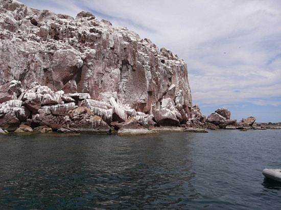

Saltpeter is also a good fertilizer for crops, because it contains fixed nirogen. A little more than a century ago, the most plentiful source of nitrogen was guano — bat or bird droppings. And the greatest source of guano was found on the Chincha Islands off the coast of Peru. The Chincha Islands — a group of very bountiful guano islands — were a major source of income for Peru. Thousands of ships would come to the island to buy the guano, which had become a very popular fertilizer. Despite the amount of money the Chincha Islands produced, barely any Peruvians wanted to work there. So Peru started to "hire" coolies — Chinese men who were often tricked into signing five-year contracts that basically made them slaves. 